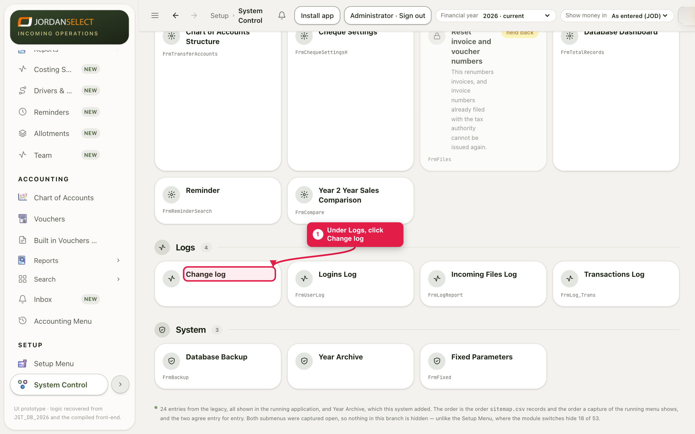
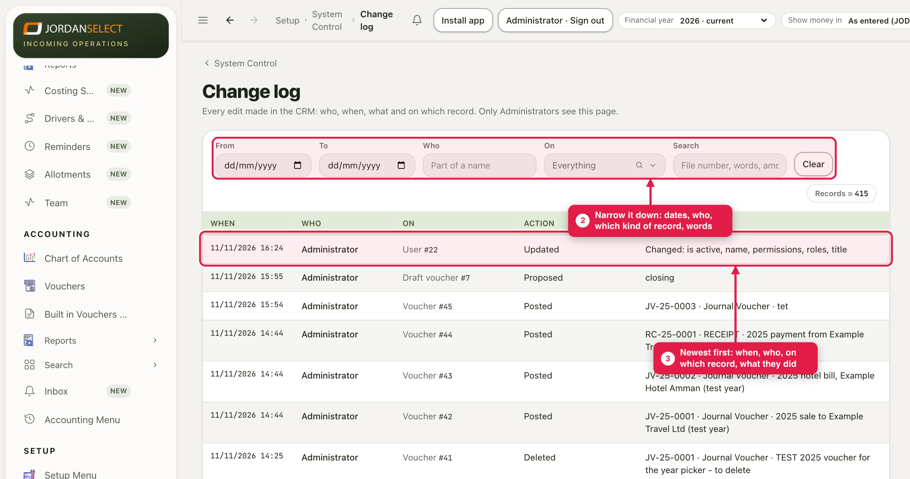
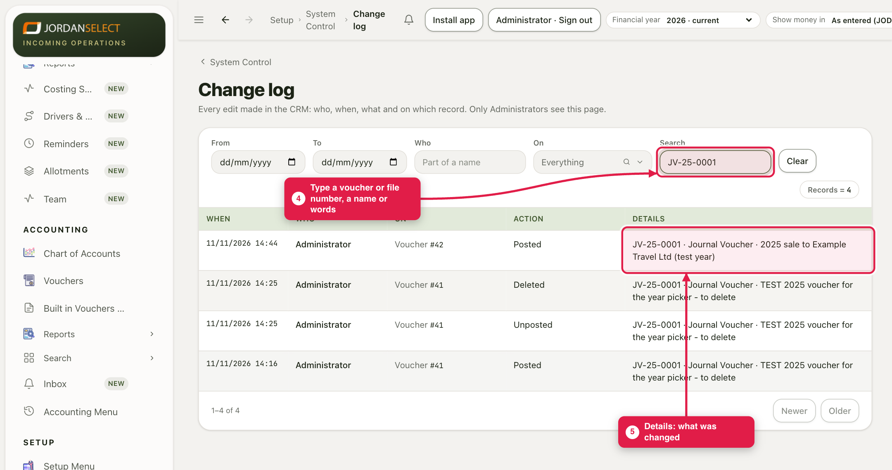

Something on a file or voucher changed and you want to know who did it and when. Every edit made in the CRM is in the change log.
WhoAdministrators only
WhereSetup → System Control → Logs → Change log
Takes1 minute
You needRoughly when, or the file or voucher number
How it works
Every save, post, delete and change in the CRM writes a line: when, who, on which record, what they did, and the details. Nobody can edit or delete these lines. Only administrators can open this page, and only administrators see a file’s Log tab. It cannot be ticked for anyone else.
1. Open the change log
1
In System Control, under Logs, click Change log.

The older logs (Logins, Incoming Files, Transactions) are next to it.
2. Narrow it down
2
Use From and To for the dates, Who for part of a person’s name, and On for one kind of record (files, vouchers, users, setup lists). The list changes as you type.
3
The newest change is at the top. Each line says when, who, on which record, and what they did.

Clear takes every filter off again.
3. Find one record
4
In Search, type the voucher or file number, a name, an amount or a word from the change.
5
Details says what was changed. For a file it names the fields (for example Changed: arrival flight); for a voucher it shows the number and description.

Every line about voucher JV-25-0001, newest first: posted, unposted, deleted, and posted again.
What it does not show yetFor most changes the log shows what was saved, not what was there before. To see the old value, look at the line before it for the same record.
Last checked: 11 Nov 2026 · Screens shown are from a test copy of the CRM with made-up data.